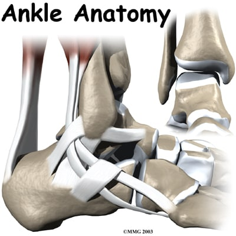
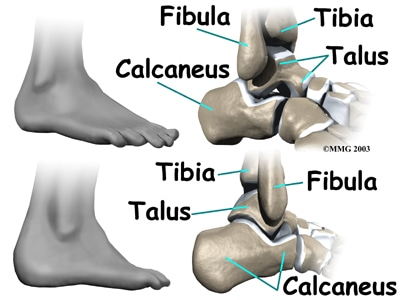

A Patient's Guide to Ankle Anatomy

Introduction
The ankle joint acts like a hinge. But it's much more than a simple hinge joint. The ankle is actually made up of several important structures. The unique design of the ankle makes it a very stable joint. This joint has to be stable in order to withstand 1.5 times your body weight when you walk and up to eight times your body weight when you run.
Normal ankle function is needed to walk with a smooth and nearly effortless gait. The muscles, tendons, and ligaments that support the ankle joint work together to propel the body. Conditions that disturb the normal way the ankle works can make it difficult to do your activities without pain or problems.
This guide will help you understand
- what parts make up the ankle
- how the ankle works
Important Structures
The important structures of the ankle can be divided into several categories. These include
- bones and joints
- ligaments and tendons
- muscles
- nerves
- blood vessels
The top of the foot is referred to as the dorsal surface. The sole of the foot is the plantar surface.
Bones and Joints
The ankle joint is formed by the connection of three bones. The ankle bone is called the talus. The top of the talus fits inside a socket that is formed by the lower end of the tibia (shinbone) and the fibula (the small bone of the lower leg). The bottom of the talus sits on the heelbone, called the calcaneus.

The talus works like a hinge inside the socket to allow your foot to move up (dorsiflexion) and down (plantarflexion).
Woodworkers and craftsmen are familiar with the design of the ankle joint. They use a similar construction, called a mortise and tenon, to create stable structures. They routinely use it to make strong and sturdy items, such as furniture and buildings.
Inside the joint, the bones are covered with a slick material called articular cartilage. Articular cartilage is the material that allows the bones to move smoothly against one another in the joints of the body.
The cartilage lining is about one-quarter of an inch thick in most joints that carry body weight, such as the ankle, hip, or knee. It is soft enough to allow for shock absorption but tough enough to last a lifetime, as long as it is not injured.
Ligaments and Tendons
Ligaments are the soft tissues that attach bones to bones. Ligaments are very similar to tendons. The difference is that tendons attach muscles to bones. Both of these structures are made up of small fibers of a material called collagen. The collagen fibers are bundled together to form a rope-like structure. Ligaments and tendons come in many different sizes and like rope, are made up of many smaller fibers. Thickness of the ligament or tendon determines its strength.
*Disclaimer:*The information contained herein is compiled from a variety of sources. It may not be complete or timely. It does not cover all diseases, physical conditions, ailments or treatments. The information should NOT be used in place of visit with your healthcare provider, nor should you disregard the advice of your health care provider because of any information you read in this topic
 All content provided by eORTHOPOD® is a registered trademark of Mosaic Medical Group, L.L.C.. Content is the sole property of Mosaic Medical Group, LLC and used herein by permission.
All content provided by eORTHOPOD® is a registered trademark of Mosaic Medical Group, L.L.C.. Content is the sole property of Mosaic Medical Group, LLC and used herein by permission.